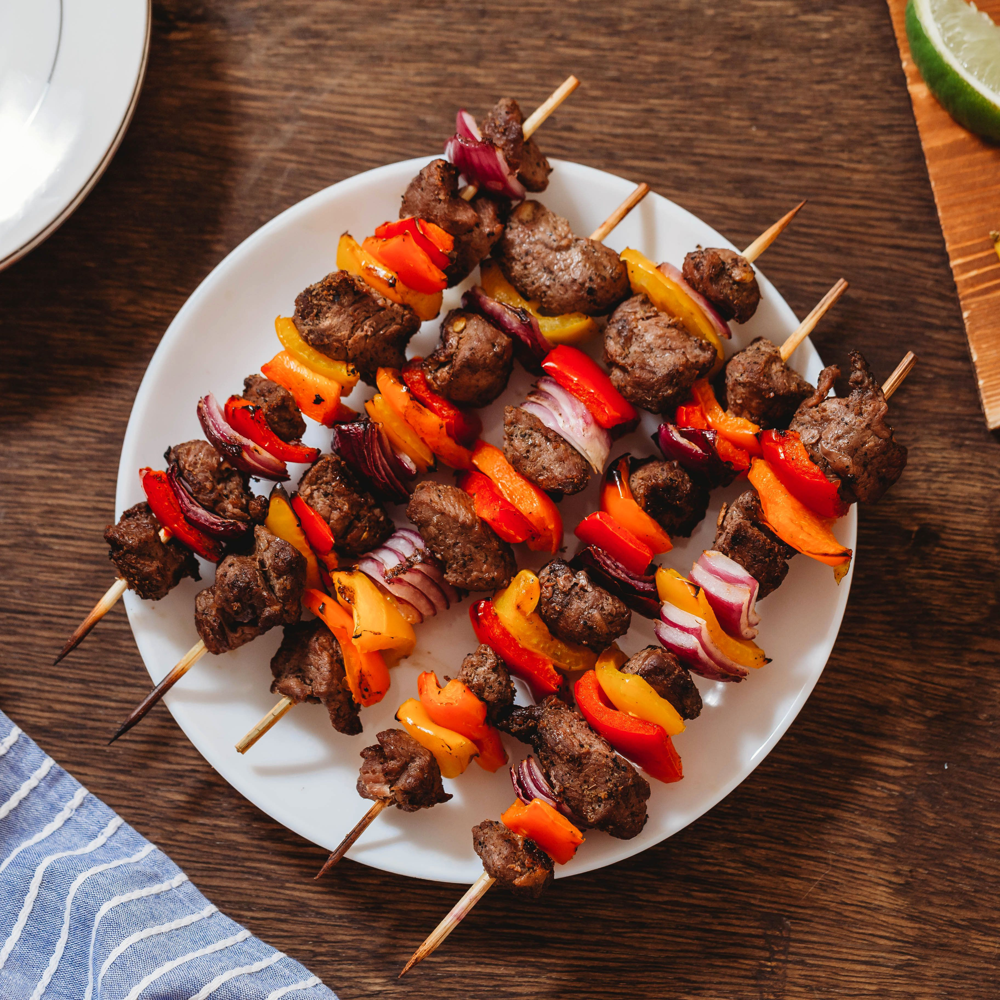

Chicken and Pineapple Kebab

A delicious combination of chicken and pineapple!
Kids are so easy to wow when they are young. My kids are actually impressed by how fast I can put my shoes on, and I’m not even trying. They are also very impressed when I put food on sticks for them. Hot dog on a stick? Amazing!
Kabobs are always a fun choice and a great way to celebrate grilling season. These Chicken and Pineapple Kabobs are not only kid friendly, but adults will love them, too. The combo of marinated chicken and charred sweet pineapple is an instant classic, so add these to your repertoire ASAP!
Ingredients
- 1/4 cup olive oil
- 1/4 cup pineapple juice
- 2 cloves garlic, minced
- 1 tablespoon soy sauce
- 1 teaspoon salt
- 1 teaspoon ground black pepper
- 1 1/2 pounds chicken (breast or thighs), cut into 1-inch pieces
- 1 pineapple, peeled and chopped into 1-inch pieces
- 1 green bell pepper, chopped into 1-inch pieces
- 1 red bell pepper, chopped into 1-inch pieces
- Couscous or rice, for serving
Steps
- Step 1: Marinate the chicken - Whisk together olive oil, pineapple juice, garlic, soy sauce, salt, and pepper in a medium bowl. Add chicken to bowl and stir to coat with the marinade. Let marinate for 20 to 30 minutes, or overnight.
- Step 2: Heat a gas or charcoal grill to medium-high heat
- Step 3: Assemble the kabobs - Add the pineapple, peppers, and chicken to the skewers in any order you like, alternating between chicken, veg, and fruit. I like to have one piece of pineapple touching each piece of chicken to keep it moist.
- Step 4: Grill the kabobs - Right before you add your kabobs to the grill, rub the grates with some oil to make sure the kabobs don’t stick. Add the kabobs and let them cook for 5 to 6 minutes per side, until they get a nice char on them. Flip a few times until total grilling time reaches the 15-18 minute range. Test a larger piece of chicken to ensure doneness. You can use an instant thermometer to make sure the chicken reaches 165 ̊F, or just cut into the piece a bit to check that it’s cooked through.
- Step 5: Serve the kabobs - Remove from the grill immediately (so they don’t dry out). Serve grilled kabobs with yogurt sauce and either rice or couscous. Leftover kabobs will keep great for a few days in the fridge, and you can reheat them on a medium-low grill or in a 350 ̊F oven until warmed through, about 5 minutes.